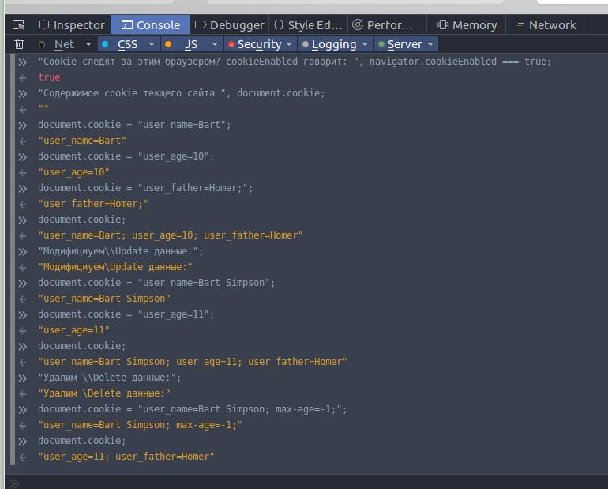

Your browser doesn't support the features required by impress.js, so you are presented with a simplified version of this presentation.
For the best experience please use the latest Chrome, Safari or Firefox browser.
Зачем хранить данные клиента?
- Идентификация сессии
- Браузерные игры
- Высоконагруженные порталы
- Образовательные приложения (тесты)
- Автозаполнение
Какие существуют системы хранения данных?
- Cookie: поддержка всеми браузерами 100%. Недостаток: отключается пользователем
- Web Strorage: поддержка современными браузерами 94,75%. Рекомендуемое к использованию
- Indexed DB: поддержка современными браузерами ~84% кроме OperaMini
- Web SQL: поддержка современными браузерами 81%. Недостаток: не поддерживается (и не будут) FF, Edge, IE, OperaMini
console.log("Cookie следят за этим браузером ?", navigator.cookieEnabled === true)
Ответ сайта:
А что записано в cookie для этого сайта: console.log("document.cookie") ?
Ответ сайта:
Этот сайт с отсутствующим cookie.
Давайте посмотрим что можно с этим сделать.
Осторожно: cookie имеют ограничение на размер файла в 4Кб.
CRUD
Create: document.cookie = "user_name=Bart";
Read: document.cookie
Update: document.cookie = "user_name=Bart Simpson";
Delete: document.cookie = "user_name=Bart;max-age=-1";
Вот как это выглядит на странице браузера в web-inspector:

Неудобно, зависимость от USER всего 4Кб
localeStorage and localeSession
ClocalStorage.setItem(name, value)
RlocalStorage.getItem(name)
UСнова localStorage.setItem(name, value)
DlocalStorage.removeItem(name)
Изучение работы с базами данных это отдельный курс.
Кроме CRUD необходимо еще много других skill